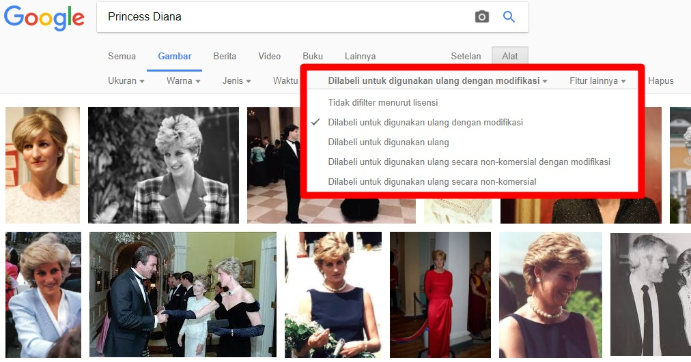
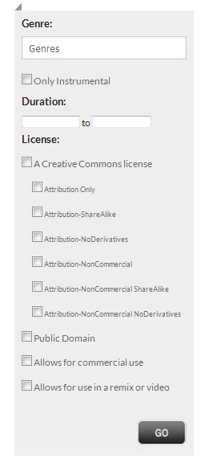
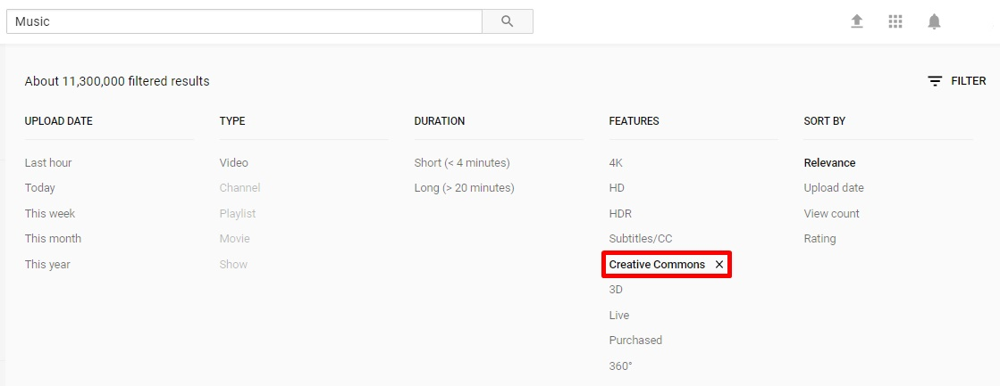

Waspada! Hindari Pencucian Lisensi!

Apakah Anda pernah mengunggah ulang suatu ciptaan milik orang lain yang Anda dapatkan di dalam jaringan ke suatu situs lalu menerapkan ketentuan lisensi tertentu pada ciptaan tersebut?
Waspadalah! Bisa saja Anda tengah melakukan pencucian lisensi!
Dan itu dilarang!
Dasar Pelarangan
Menurut angka 20 ketentuan umum Undang-Undang Hak Cipta No. 28 Tahun 2014 Tentang Hak Cipta (UUHC 2014) lisensi merupakan “izin tertulis yang diberikan oleh Pemegang Hak Cipta atau Pemilik Hak Terkait kepada pihak lain untuk melaksanakan hak ekonomi atas Ciptaannya atau produk Hak Terkait dengan syarat tertentu”. Hampir seluruh berkas media yang diunggah secara daring merupakan obyek perlindungan hak cipta. Setiap obyek perlindungan hak cipta memiliki aturan main yang mengatur tentang apa yang boleh dan/atau tidak boleh serta prasyarat penggunaan terhadap berkas-berkas tersebut. Aturan main-aturan main yang berkembang tersebut merupakan salah satu wujud dari lisensi yang dimaksud oleh UUHC 2014. Keberadaan alat berupa lisensi ini dimaksudkan untuk menambah kepastian perlindungan hukum dalam bentuk pemberitahuan status hak cipta yang diterapkan terhadap suatu ciptaan oleh pencipta atau pemegang hak cipta dan dapat dibaca oleh pengguna ciptaan serta mengikat setiap penggunaannya terhadap ciptaan tersebut.
Lisensi biasanya secara sederhana diungkapkan dengan teks pendek seperti “All Rights Reserved”. Artinya, setiap ciptaan yang pemilik atau pemegang hak ciptanya menerapkan teks tersebut terhadap ciptaannya mempertahankan seluruh hak atas ciptaannya tersebut. Semua pihak yang hendak menggunakan ciptaan dengan tanda lisensi tersebut wajib mendapatkan izin langsung dari pemilik atau pemegang hak cipta terlebh dahulu sebelum menggunakan ciptaan. Lain halnya dengan ciptaan-ciptaan berlisensi Creative Commons (CC). Prinsip yang dianut oleh lisensi CC ialah prinsip “Some Rights Reserved” atau beberapa hak dipertahankan. Lisensi ini memberikan pilihan kepada pencipta atau pemegang hak cipta untuk menutup dan/atau membuka akses apa saja kepada pengguna ciptaan terhadap ciptaan. Sebelumnya telah dijelaskan bahwa ciptaan berlisensi CC paling tidak dapat digandakan dan disebarluaskan oleh pengguna ciptaan tanpa izin langsung dari pencipta atau pemegang hak cipta. Yang harus diperhatikan kemudian adalah setiap ketentuan tambahan dari 4 spektrum pilihan yang dipilih oleh pemilik atau pemegang hak cipta terhadap ciptaan tersebut. Ketentuan NC (NonKomersial) melarang segala bentuk komersialisasi ciptaan, ketentuan ND (TanpaTurunan) melarang segala pengubahan dan/atau penggubahan terhadap ciptaan. Selanjutnya terdapat ketentuan SA (BerbagiSerupa) yang mewajibkan setiap hasil gubahan ciptaan (ciptaan turunan) menerapkan lisensi yang sama dengan ciptaan yang merupakan materi asli. Ketentuan terakhir adalah BY (Atribusi) yang mewajibkan setiap pengguna ciptaan menyebutkan sumber dan nama pemilik atau pemegang hak cipta dalam setiap penggunaan. Keempat spektrum tersebut kemudian dapat dirangkai menjadi 6 pilihan lisensi yang dapat secara langsung diterapkan oleh pemilik atau pemehang hak cipta terhadap ciptaannya. Setiap pilihan lisensi menerapkan ketentuan spektrum Atribusi, karena kewajiban penyebutan nama pencipta atau pemegang hak cipta merupakan kewajiban moral yang tidak bisa ditawar dan harus diterapkan oleh pengguna ciptaan.
Intinya lisensi-lisensi ini merupakan pernyataan tentang maksud pemilik atau pemegang hak cipta ketika ciptaan diumumkan kepada publik, agar publik mengetahui seberapa bebas ciptaan tersebut dapat digunakan. Pernyataan ini menjadi alat bantu komunikasi antara publik (pengguna ciptaan) dengan pemilik atau pemegang hak cipta. Selain menjadi alat bantu komunikasi, lisensi mengikat pencipta atau pemegang hak cipta dengan pengguna ciptaan secara legal. Setiap lisensi yang disematkan pada ciptaan-ciptaan wajib untuk diperhatikan dan ditaati setiap ketentuannya.
Pencucian Lisensi

Istilah ini pertama kali diperkenalkan oleh situs web Wikimedia Commons, salah satu proyek Wiki yang merupakan tempat penyimpanan berkas media (audio, gambar, dan video) untuk artikel-artikel di Wikipedia. Selain berfungsi sebagai tempat penyimpanan, Wikimedia Commons juga menjadi tempat untuk membagikan karya-karya tersebut supaya juga dapat digunakan di situs web selain Wikipedia. Dalam hal ini, Wikimedia Commons menerapkan aturan main yang ketat terhadap setiap berkas yang diunggah.
Pada laman pengunggahannya, situs web ini mewajibkan setiap pengunggah berkas media untuk mengidentifikasi apakah ciptaan yang diunggah merupakan ciptaan buat sendiri atau milik pihak lain. Apabila ciptaan tersebut merupakan ciptaan yang hak ciptanya dimiliki atau dipegang oleh pihak lain, pengunggah wajib menunjukan izin pengunggahan yang diutarakan secara tertulis oleh pemilik atau pemegang hak cipta sebagai bukti sah bahwa pengunggah berhak untuk mengunggah ciptaan tersebut ke Wikimedia Commons. Di dalam pernyataan izin pengunggahan tersebut pun harus diutarakan secara jelas lisensi apa yang dikehendaki atau disetujui oleh pihak pemilik atau pemegang hak cipta untuk diterapkan pada ciptaannya yang diunggah ke Wikimedia Commons. Proses ini disebut sebagai Open-source Ticket Request System (OTRS). Pernyataan izin ini kemudian akan dinilai oleh sukarelawan Wikimedia Commons, jika disetujui maka setiap berkas yang diunggah oleh pengunggah akan diberi tanda lolos proses OTRS oleh sukarelawan yang bersangkutan.
Lain halnya jika berkas-berkas tersebut pernah diumumkan secara daring melalui situs web seperti Flickr, Internet Archive, atau situs-situs web pengunggahan berkas lain dan ditandai dengan ketentuan lisensi Creative Commons (CC). Penandaan berkas dengan ketentuan lisensi CC yang kompatibel dengan Wikimedia Commons, dalam hal ini CC BY (Atribusi)dan CC BY-SA (Atribusi-BerbagiSerupa) atau lisensi lain dengan ketentuan serupa dan/atau mendekati, dapat menjadi pengganti pernyataan izin dari pemilik atau pemegang hak cipta terhadap berkas-berkas tersebut. Karena, setiap tanda lisensi CC yang disematkan pada berkas-berkas tersebut memberikan izin secara langsung kepada pengguna atau pengakses berkas untuk paling tidak menggandakan dan menyebarluaskan berkas tersebut. Tingkat kebebasan penggunaan berkas kemudian menjadi bertambah dengan penerapan ketentuan BY atau BY-SA yang memungkinkan adanya pengubahan dan/atau penggubahan ciptaan untuk kepentingan apapun.
Dengan seperangkat aturan main ini, Wikimedia Commons bermaksud meminimalisir terjadinya pencucian lisensi. Pencucian lisensi adalah setiap bentuk pengumuman atau pengunggahan berkas secara daring maupun luring yang menyertakan pengubahan ketentuan lisensi ciptaan dari ketentuan lisensi yang diterapkan oleh pemilik atau pemegang hak cipta. Umumnya kejadian ini terjadi karena penggunggah atau pengguna berkas tidak memiliki dasar pemahaman terkait etika penggunaan berkas yang ditemukan secara daring. Misalnya ada pengguna berkas yang mengunggah ulang berkas dengan ketentuan lisensi NonKomersial ke Wikimedia Commons dengan lisensi yang memperbolehkan penggunaan komersial. Atau misalnya seorang produser musik menggunakan beberapa bagian dari rekaman musik berlisensi CC BY-NC-SA pada ciptaan turunannya yang berlisensi CC BY-NC-ND. Ketentuan lisensi yang bertentangan antara alat atau ciptaan tidak akan dapat disatukan dan jika dipaksakan untuk disatukan maka yang terjadi adalah pencucian lisensi. Pencucian lisensi adalah salah satu bentuk pelanggaran hak cipta. Hal tersebut juga bisa mencederai kepercayaan pemberi lisensi terhadap para penggunanya yang tidak bisa menaati ketentuan lisensi dengan benar.
Menghindari pencucian lisensi
Menjamurnya fasilitas pengunggahan dan pencarian atau penemuan berkas secara daring kini diikuti dengan beberapa alat yang dapat menunjukan kita lisensi hak cipta dari masing-masing berkas yang ada di dalam jaringan serta memudahkan kita menjaring berkas-berkas yang hendak kita gunakan agar sesuai dengan kriteria penggunaan kita. Dengan memiliki bekal pengetahuan-pengetahuan tersebut para pengguna berkas dapat menghindarkan diri dari tindak pencucian lisensi yang merupakan salah satu bentuk penyelundupan hukum di ranah hukum hak cipta.
Alat-alat itu ialah:
Google Image Search
Google Image Search menyediakan fitur penyaring gambar berdasarkan hak penggunaan. Dengan memanfaatkan fitur ini Anda dapat menggunakan gambar yang sesuai dengan kebutuhan penggunaan Anda. Pilihan penyaringan yang diberikan sudah meliputi seluruh ketentuan lisensi CC. Bahkan Anda bisa menyaring agar mesin pencari ini hanya mengeluarkan hasil gambar-gambar yang dapat digunakan kembali untuk kepentingan komersial.
Fitur Penyaringan Lisensi di Free Music Archive
Sebagai salah satu situs web penyedia konten musik gratis dan berlisensi terbuka, Free Music Archive (FMA) menyediakan alat penyaring untuk memudahkan pengguna ciptaan dalam menemukan ciptaan yang ketentuan lisensinya sesuai dengan kebutuhan. FMA menyediakan lebih dari 100.000 berkas musik dengan berbagai varian jenis musik sehingga dapat dipastikan Anda dapat menemukan ciptaan yang Anda butuhkan dengan memanfaatkan situs web ini.
Fitur Penyaringan Lisensi di Youtube
Tidak diragukan lagi, Youtube telah menjadi tempat pemberhentian pertama warganet untuk mencari ciptaan video. Dengan 30 juta lebih video berlisensi CC, Youtube dapat memastikan Anda terhindar dari perbuatan pencucian lisensi ketika Anda menggunakan kembali suatu ciptaan video.